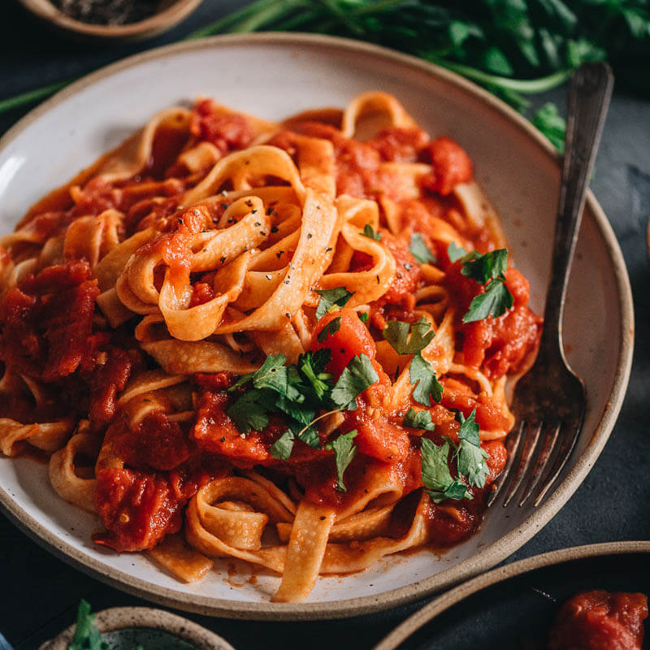

The history of marinara began in the mid-16th century after Spaniards introduced the tomato to Europe. While often associated with seafood, the name actually refers to the "mariners" (merraiuoli) of Naples who prepared this meatless sauce upon returning.
A precursor of marinara was likely a simple seasoned tomato preserve, known to the Neapolitans as a versatile base to which herbs were added. Modern marinara evolved into a quick-cooking sauce that relies on the quality of San Marzano tomatoes.
The word marinara was first documented as a culinary term in Naples and successively in different parts of coastal Italy. Furthermore, the Dictionary of Italian Gastronomy explains the word marinara as relating to the sea, not for its ingredients, but for its durability on long voyages without refrigeration.
Using a heavy-bottomed pan, sauté the sliced garlic in the olive oil until it is fragrant and golden but not burnt. Don't rush. Pour in the crushed tomatoes and bring to a gentle simmer on the stove until the sauce thickens.
Add the dried oregano and a pinch of red pepper flakes to the pan and stir for about twenty minutes, until the oil begins to separate from the tomato pulp and the sauce is deep red.
Put the pasta in a large pot of salted water, covered, and boil for about eight to ten minutes. It will keep the texture firm and "to the tooth" if you remove it exactly one minute before the package instructions specify.
When you're ready for the pasta, turn the heat to medium and transfer the noodles directly into the sauce. Divide the sauce evenly among the strands and toss vigorously for a minute or until the pasta is perfectly coated.
Using a large spoon roll out each serving into a deep bowl, in turn, into a mountain of the desired size and height. This time I went for a classic marinara: place a heaping ladleful of extra sauce in the center of the pasta and gently spread it over the top except for the edges of the bowl. Sprinkle with a lot of torn basil leaves, oregano and then some more olive oil on top. Serve on warmed plates for about 2 minutes until the steam settles and the aromas start to bloom. Sprinkle with fresh pepper and serve.